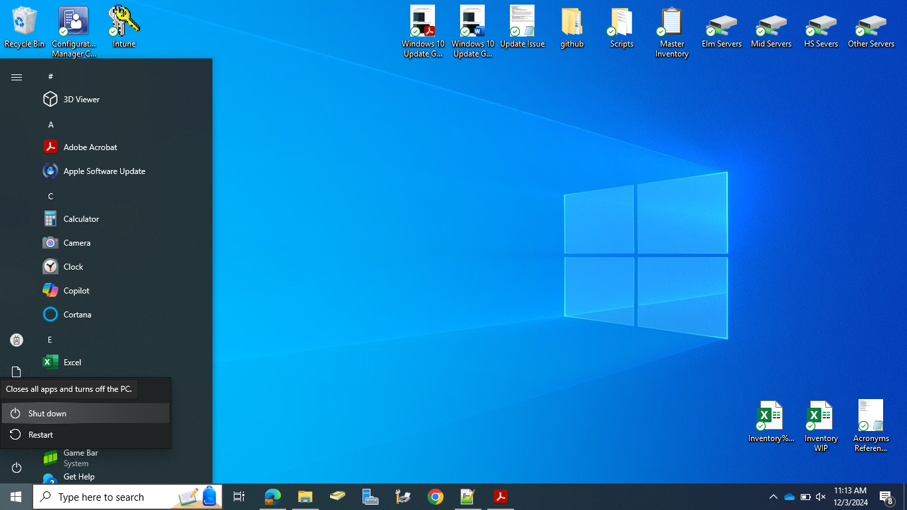
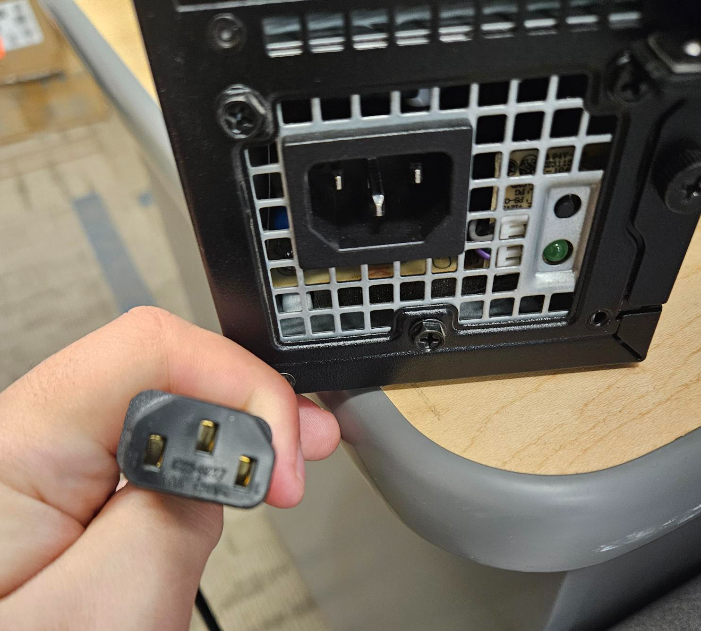

Power Cycling Guide
In cases where your devices is stuck/frozen or some basic features aren't working one of the
simpilest things you can attempt is to power cycle the device.
-
First off by attempting to go the Start Menu in the bottom right hand corner,
then click the Power button, and finally Shut down.

After the device has completly shutdown it is best to wait 1-5 minute before powering it
back up again to see if your issue has been resolved.
-
If you are unable to access the Start Menu due to your device being frozen or some other
issue like that press and hold down the power button for 15-20 seconds to turn the device off.
-
In cases that you are dealing with a desktop and are unable to turn the device off with the power
button, you can reach behind the device and pull out the large 3 prong plug on the back and leave
it unplugged for 15-20 seconds before plugging it back in and attempting to turn the device back on.
